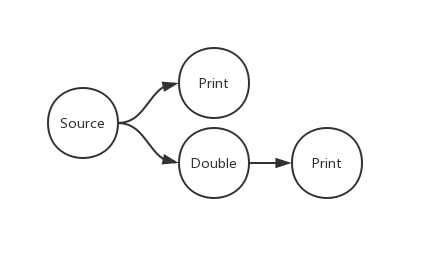

<!DOCTYPE html>
<html>
<head><meta name="generator" content="Hexo 3.8.0">
  <meta charset="utf-8">
  <meta http-equiv="X-UA-Compatible" content="IE=edge">
  
  <title>Dataflow | MechDancer Documentation</title>
  <meta name="description" content>
  <meta name="keywords" content>
  <meta name="HandheldFriendly" content="True">
  <meta name="apple-mobile-web-app-capable" content="yes">
  <link rel="shortcut icon" href="https://raw.githubusercontent.com/MechDancer/mechdancer.github.io/master/css/images/favicon.png">
  <link rel="alternate" href="/Documentation/atom.xml" title="MechDancer Documentation">
  <meta name="viewport" content="width=device-width, initial-scale=1, maximum-scale=1">
  <meta name="description" content="Abstractdataflow library provides components and tools to build data processing network, to help programmer build robust, concurrency-enabled applications easily. In other words, users do not need to">
<meta property="og:type" content="article">
<meta property="og:title" content="Dataflow">
<meta property="og:url" content="https://www.mechdancer.org/dataflow/index.html">
<meta property="og:site_name" content="MechDancer Documentation">
<meta property="og:description" content="Abstractdataflow library provides components and tools to build data processing network, to help programmer build robust, concurrency-enabled applications easily. In other words, users do not need to">
<meta property="og:locale" content="en_US">
<meta property="og:image" content="https://www.mechdancer.org/images/network.png">
<meta property="og:updated_time" content="2019-04-14T07:00:00.491Z">
<meta name="twitter:card" content="summary">
<meta name="twitter:title" content="Dataflow">
<meta name="twitter:description" content="Abstractdataflow library provides components and tools to build data processing network, to help programmer build robust, concurrency-enabled applications easily. In other words, users do not need to">
<meta name="twitter:image" content="https://www.mechdancer.org/images/network.png">
    
  <link href="https://fonts.googleapis.com/css?family=Inconsolata|Titillium+Web" rel="stylesheet">
  <link href="https://fonts.googleapis.com/css?family=Roboto+Mono" rel="stylesheet">
  <link href="//cdn.bootcss.com/node-waves/0.7.5/waves.min.css" rel="stylesheet">
  <link rel="stylesheet" href="/Documentation/style.css">
  <script>
    function setLoadingBarProgress(num) {
      document.getElementById('loading-bar').style.width=num+"%";
    }
  </script>
</head>
</html>
<body>
  <div id="loading-bar-wrapper">
  <div id="loading-bar"></div>
</div>


  <script>setLoadingBarProgress(20)</script> 
  <header class="l_header">
	<div class="wrapper">
		<div class="nav-main container container--flex">
			<a class="logo flat-box" href="/Documentation/">
				MechDancer Documentation
			</a>
			<div class="menu">
				<ul class="h-list">
					
						<li>
							<a class="flat-box nav-home" href="/Documentation/">
								Home
							</a>
						</li>
					
						<li>
							<a class="flat-box nav-archives" href="/Documentation/archives">
								Archives
							</a>
						</li>
					
				</ul>
				<div class="underline"></div>
			</div>
			
				<div class="m_search">
					<form name="searchform" class="form u-search-form">
						<input type="text" class="input u-search-input" placeholder="Search">
						<span class="icon icon-search"></span>
					</form>
				</div>
			
			<ul class="switcher h-list">
				
					<li class="s-search"><a href="javascript:void(0)"><span class="icon icon-search flat-box"></span></a></li>
				
				<li class="s-menu"><a href="javascript:void(0)"><span class="icon icon-menu flat-box"></span></a></li>
			</ul>
		</div>
		
		<div class="nav-sub container container--flex">
			<a class="logo" href="javascript:void(0)">
				Word of Forks
			</a>

			<ul class="switcher h-list">
				<li class="s-comment"><a href="javascript:void(0)"><span class="icon icon-chat_bubble_outline flat-box"></span></a></li>
				<li class="s-top"><a href="javascript:void(0)"><span class="icon icon-arrow_upward flat-box"></span></a></li>
				<li class="s-toc"><a href="javascript:void(0)"><span class="icon icon-format_list_numbered flat-box"></span></a></li>
			</ul>
		</div>
	</div>
</header>
<aside class="menu-phone">
	<nav>
		
			<a href="/Documentation/" class="nav-home nav">
				Home
			</a>
		
			<a href="/Documentation/archives" class="nav-archives nav">
				Archives
			</a>
		
	</nav>
</aside>

    <script>setLoadingBarProgress(40);</script>
  <div class="l_body">
    <div class='container clearfix'>
      <div class='l_main'>
        <article id="post-dataflow" class="post white-box article-type-post" itemscope itemprop="blogPost">
	<section class="meta">
	<h2 class="title">
  	<a href="/Documentation/dataflow/">
    	Dataflow
    </a>
  </h2>
	<!-- <time>
		Jan 1, 9102
	</time> -->
	
	</section>
	
		<section class="toc-wrapper"><ol class="toc"><li class="toc-item toc-level-2"><a class="toc-link" href="#Abstract"><span class="toc-number">1.</span> <span class="toc-text">Abstract</span></a></li><li class="toc-item toc-level-2"><a class="toc-link" href="#Use-case"><span class="toc-number">2.</span> <span class="toc-text">Use case</span></a></li><li class="toc-item toc-level-2"><a class="toc-link" href="#Terminology"><span class="toc-number">3.</span> <span class="toc-text">Terminology</span></a></li><li class="toc-item toc-level-2"><a class="toc-link" href="#Implementation"><span class="toc-number">4.</span> <span class="toc-text">Implementation</span></a></li></ol></section>
	
	<section class="article typo">
  	<div class="article-entry" itemprop="articleBody">
			<h3 class="title">
			Repo: <a href="https://github.com/MechDancer/dataflow-jvm">
						dataflow-jvm
					</a>
				</h3>	
			<h2 id="Abstract"><a href="#Abstract" class="headerlink" title="Abstract"></a>Abstract</h2><p><em>dataflow</em> library provides components and tools to build data processing network, to help programmer build robust, concurrency-enabled applications easily. In other words, users do not need to manually manage task scheduling, even avoid all races under a premise of following certain design specifications and ensure the security of concurrent applications without mutex.</p>
<h2 id="Use-case"><a href="#Use-case" class="headerlink" title="Use case"></a>Use case</h2><p>Unlike traditional imperative programming, programmers who receive data flow ideas write programs by directly describing static data calculation sequences and data transfer relationships. Here is an example:</p>
 <figure class="highlight kotlin"><table><tr><td class="gutter"><pre><span class="line">1</span><br><span class="line">2</span><br><span class="line">3</span><br><span class="line">4</span><br><span class="line">5</span><br><span class="line">6</span><br><span class="line">7</span><br><span class="line">8</span><br><span class="line">9</span><br><span class="line">10</span><br><span class="line">11</span><br><span class="line">12</span><br></pre></td><td class="code"><pre><span class="line"><span class="function"><span class="keyword">fun</span> <span class="title">main</span><span class="params">()</span></span> = runBlocking &#123;</span><br><span class="line">    <span class="comment">// initialize</span></span><br><span class="line">    <span class="keyword">val</span> source = broadcast&lt;<span class="built_in">Int</span>&gt;()</span><br><span class="line">    source - &#123; println(it) &#125;</span><br><span class="line">    source - &#123; <span class="number">2</span> * it &#125; - &#123; println(it) &#125;</span><br><span class="line"></span><br><span class="line">    <span class="comment">// using</span></span><br><span class="line">    source post <span class="number">1</span></span><br><span class="line"></span><br><span class="line">    <span class="comment">// waiting</span></span><br><span class="line">    delay(<span class="number">100</span>)</span><br><span class="line">&#125;</span><br></pre></td></tr></table></figure>
<p>In this example, the initialization code section describes a network with 4 nodes:</p>
<ul>
<li>A source node, who transfers number to two child nodes simultaneously</li>
<li>A action node, print the number</li>
<li>A transform node, double the number</li>
<li>Another action node, print the doubled number</li>
</ul>
<p>In the code that follows, we post a number <em>1</em> to the source node. There will be a <em>1</em> and a <em>2</em> printout on the console. Normally 1 will appear before 2, but not absolute, because the dataflow library has <strong>parallelized</strong> these two actions.</p>
<p></p>
<p>By parallelization, we can make full use of the CPU’s computing performance, in the low-frequency multi-core architecture of the mobile phone CPU, the benefits brought by parallelization are particularly obvious. Building network construction directly helps programmers better organize logic and avoid the confusion caused by repeated multi-layered function calls and multiple control transferring. The disposable, unsupervised execution style avoids the complexity of process control, and the data flowing between nodes can be considered constant, so that arbitrarily modifying the data at the later stage will not pose a danger to the predecessor.</p>
<h2 id="Terminology"><a href="#Terminology" class="headerlink" title="Terminology"></a>Terminology</h2><p>There are some important concepts in the dataflow library:</p>
<ul>
<li><p><em>Node</em></p>
<p>Unlike the parallelized list operation supported by the standard libraries of many languages, dataflow provides coarse-grained parallelism, and nodes are atoms during the parallelization. The node is where the calculation takes place, and the data passing through the node is modified to change their value and type. In addition, unlike the imperative functions which do not manage the returned values at all, nodes also control the way that data is distributed backwards. </p>
<p>According to the behavior of the data entering the node, nodes can be divided into buffed and unbuffered. </p>
<p>According to the operation of data in the node, nodes can be divided into modified and unmodified.</p>
<p>According to the way the data leaves the node, nodes can be divided into cold, normal and broadcast.</p>
</li>
<li><p><em>Link</em></p>
<p>The links connect nodes and become channels for the data. The data passed through the link can be filtered and counted according to some rules.</p>
</li>
<li><p><em>Post</em></p>
<p>Data can be passed automatically between nodes in the network, but usually the node will only process the data from other nodes and pass it backwards instead of generating the data itself. The operation to send external data to the network to start processing is called “post”.</p>
</li>
</ul>
<h2 id="Implementation"><a href="#Implementation" class="headerlink" title="Implementation"></a>Implementation</h2><p>There are various ways to implement dataflow. The way we selected is to combine the responsive and producer consumer models, that is, the producer informs the consumer when the data is ready, and the consumer requests data from the producer when it is ready to process the data. The producer receives data from outside the network or other nodes, processes it, and then binds an id with the processed data, then informs the consumers it connected to with the id. The consumer immediately saves the id and uses the id to get corresponding data from the producer when it is ready to process it. If the data is still there (not consumed by other consumers and not discarded by the producer), the producer gives the data to the consumer. At which point the consumer becomes a producer, so the above steps will continue.</p>

	
			
  	</div>
	  
		
	
		<div class="art-item-footer">
				
				
					<span class="art-item-right">next：<a href="/Documentation/dependency/" rel="next" title="Dependency">
						Dependency
					</a><i class="icon icon-chevron-thin-right"></i></span>
				
		</div>
	
	</section>
	
</article>
<script>
	window.subData = {
		title: 'Dataflow',
		tools: true
	}
</script>

      </div>
      <aside class='l_side'>
        
  <section class="m_widget about">


<div class="header">MechDancer</div>
<div class="content">
<div class="desc">The documentation of MechDancer Projects.</div>
</div>
</section>


  <section class="m_widget links">
<div class="header">Links</div>
<div class="content">
    <ul class="entry">
    
        <li><a class="flat-box" target="_blank" href="https://www.mechdancer.org">
            <div class="name">MechDancer Home</div>
        </a></li>
    
        <li><a class="flat-box" target="_blank" href="https://github.com/berberman">
            <div class="name">berberman Github</div>
        </a></li>
    
    </ul>
</div>
</section>

      </aside>
      <script>setLoadingBarProgress(60);</script>
    </div>
  </div>
  <footer id="footer" class="clearfix">

	<div class="social-wrapper">
  	
      
        <a href="https://github.com/mechdancer" class="social github" target="_blank" rel="external">
          <span class="icon icon-github"></span>
        </a>
      
    
  </div>
  
  <div>Theme <a href="https://github.com/stkevintan/hexo-theme-material-flow" class="codename">MaterialFlow</a> designed by <a href="http://keyin.me/" target="_blank">Kevin Tan</a>.</div>
  
</footer>


  <script>setLoadingBarProgress(80);</script>
  

<script src="//apps.bdimg.com/libs/jquery/2.1.4/jquery.min.js"></script>
<script src="//cdn.bootcss.com/node-waves/0.7.5/waves.min.js"></script>
<script src="//cdn.bootcss.com/scrollReveal.js/3.3.2/scrollreveal.min.js"></script>
<script src="/Documentation/js/jquery.fitvids.js"></script>
<script>
	var GOOGLE_CUSTOM_SEARCH_API_KEY = "";
	var GOOGLE_CUSTOM_SEARCH_ENGINE_ID = "";
	var ALGOLIA_API_KEY = "";
	var ALGOLIA_APP_ID = "";
	var ALGOLIA_INDEX_NAME = "";
  var AZURE_SERVICE_NAME = "";
  var AZURE_INDEX_NAME = "";
  var AZURE_QUERY_KEY = "";
  var BAIDU_API_ID = "";
  var SEARCH_SERVICE = "hexo";
  var ROOT = "/Documentation/"||"/";
  if(!ROOT.endsWith('/'))ROOT += '/';
</script>
<script src="/Documentation/js/search.js"></script>
<script src="/Documentation/js/app.js"></script>


  <script>setLoadingBarProgress(100);</script>
</body>
</html>
